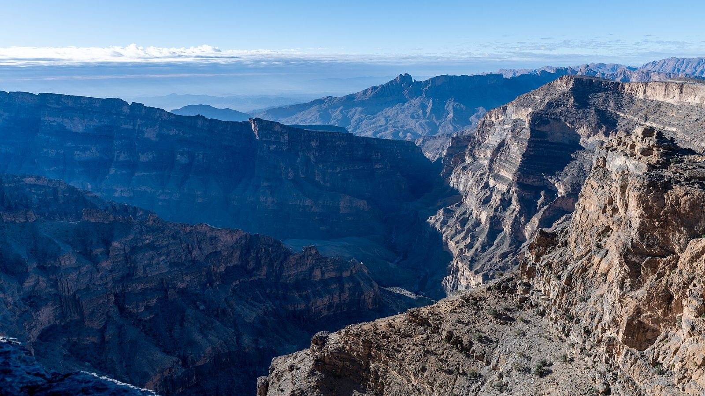
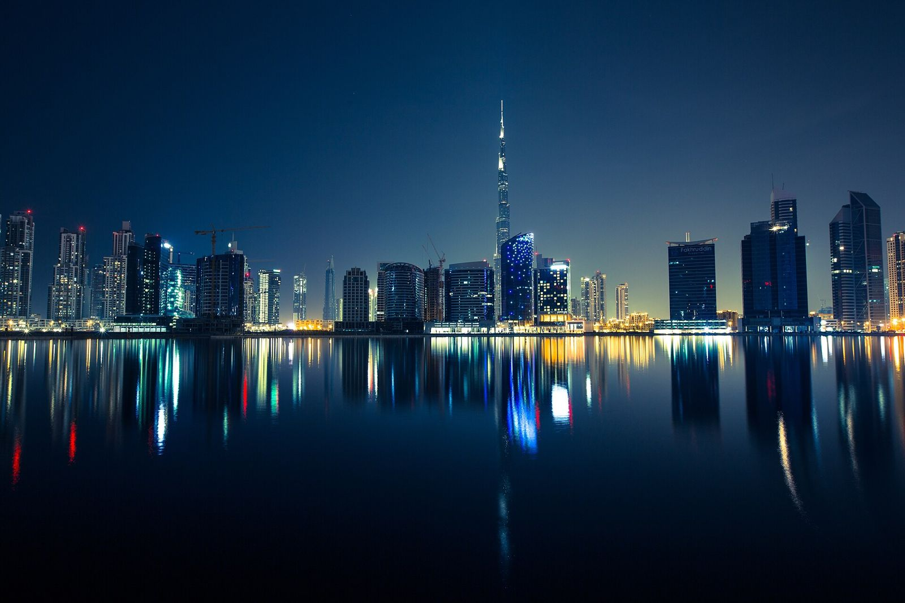

Petra, Wadi Rum og Dødehavet
Jordan
Elleve dager fra romerske søyler til den rosa klippebyen, verdens laveste punkt og en natt under stjernene i ørkenen.
- 3 reisende
- 11 dager
- Økonomi fra Trondheim
10 000 til 15 000 kr per person 90 000 poeng for tre, med to CT
Se hele forslaget →
Gorillaer og safari
Uganda
En time på noen meters hold fra en gorillafamilie i tåkeskogen, og rundt den to uker med sjimpanser, løver i trærne og Nilen.
- 3 reisende
- 14 dager
- Business
30 000 til 35 000 kr per person 195 000 poeng for tre, med to CT
Se hele forslaget →
Fjell, sanddyner og skilpaddestrender
Oman via Dubai
Fjorten dager fra skyskrapere og krydderbasarer til skilpaddestrender, sanddyner og fjell med utsikt tusen meter rett ned.
- 3 reisende
- 14 dager
- Business til Dubai
15 000 til 20 000 kr per person 195 000 poeng for tre, med to CT
Se hele forslaget →
By, ørken og strand
Dubai
Skyskrapere, ørken, gamleby og strand. To uker med by, sand, fjell og en avstikker til Abu Dhabi.
- 3 reisende
- 14 dager
- Business fra Trondheim
15 000 til 20 000 kr per person 195 000 poeng for tre, med to CT
Se hele forslaget →
Åtte dager, plukk selv
Kina
Byene, naturen og maten som byggeklosser: Shanghai, Beijing, Xi'an, pandaer, karstfjell og mer. Direkte fly til Shanghai.
- 3 reisende
- 8 hele dager
- Business, direkte
15 000 til 20 000 kr per person 270 000 poeng for tre i business, med to CT
Se hele forslaget →